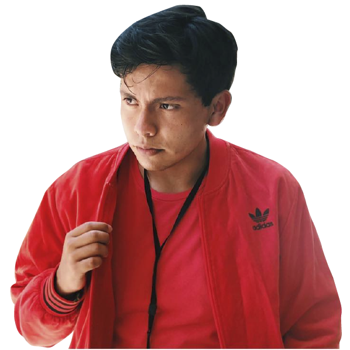

Fecha de Nacimiento:22 de Junio del 2002.
Ocupación:Ingeniero Industrial.
Acerca de
Hijo menor de la familia González Ramírez nacido en la Ciudad de Puebla, Pue.
Dedicado a la Ingenieria Industrial en las áreas de Administración, Lineas de Control y Inspección.
Gustos por la música de Reegueton y Bay Bunny.
Al igual que suele pasar sus ratos libres con videojuegos como Fortnite y Warzone.
Actualmente esta cursando 4° Semestre en la carrera de Ingenieria Industrial.
Álbumes favoritos

Dua Lipa
Grandes Éxitos
Frase Característica
“Ser competitivo es dar todo por
lo que amas”
-Alejandro GoRa
Habilidades
💓 Alegre
💓 Sincero
💓 Sociable
💓 Responsable